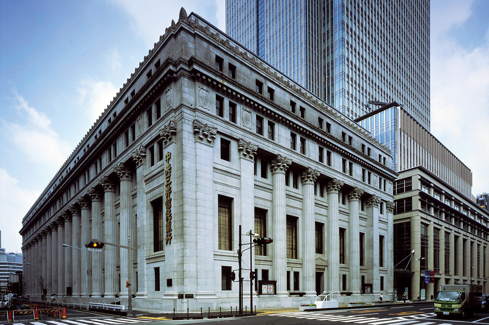
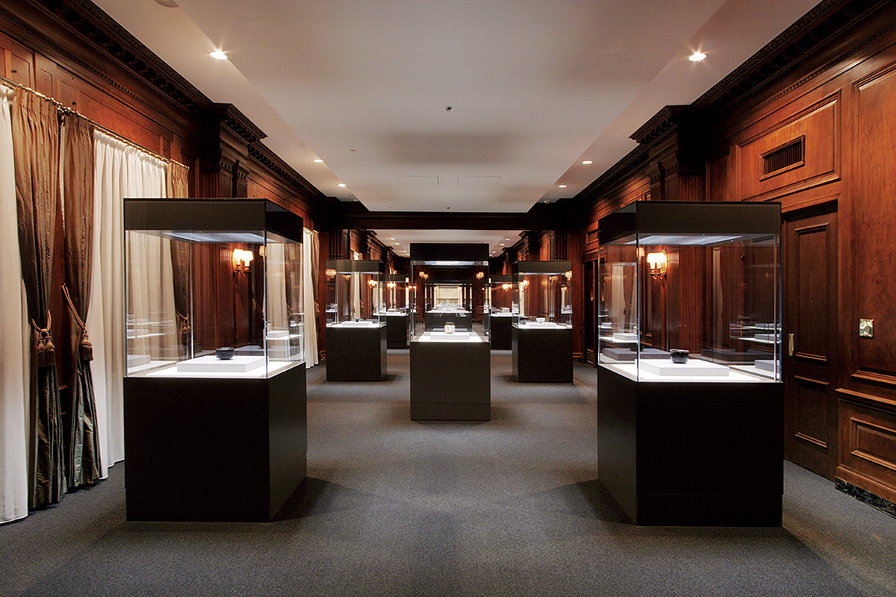
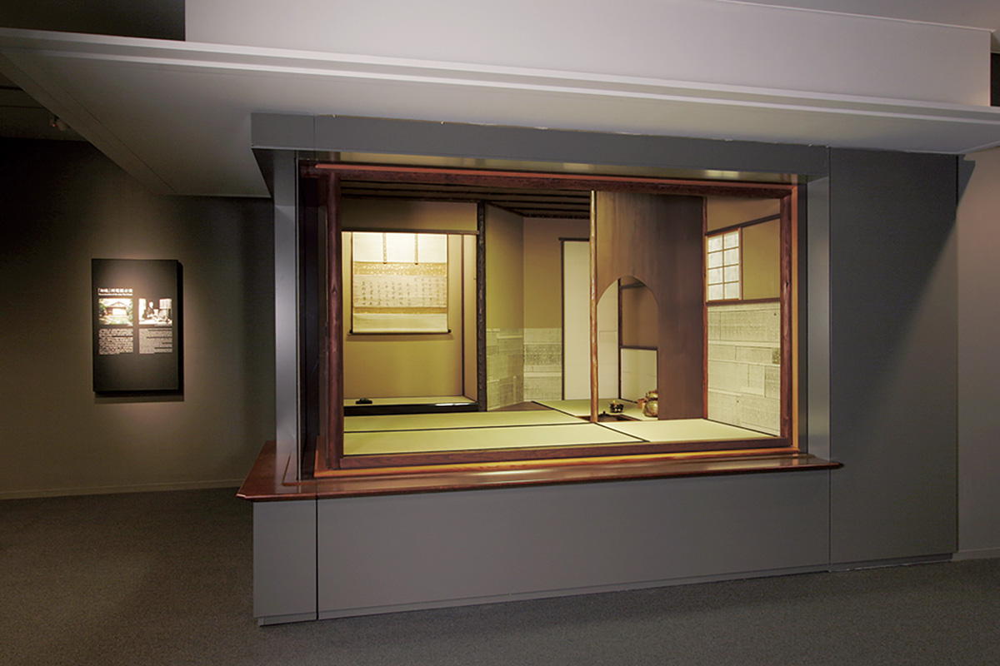
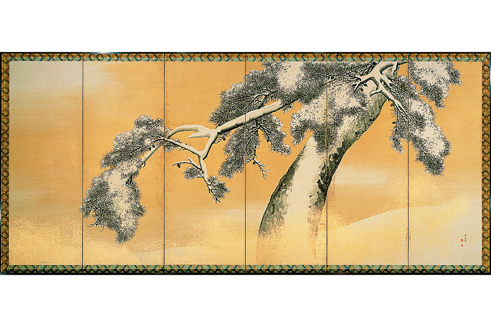

Токио · Нихонбаси · музей
Музей Мицуи: чайные чаши и ширма Окё в здании, которое само охраняется государством

В токийском районе Нихонбаси, на седьмом этаже каменного здания 1929 года, хранится собрание семьи Мицуи, одной из трёх крупнейших финансовых династий Японии. Здесь смотрят не только на чайные чаши и ширмы, но и на сами залы с деревянными панелями и каминами.
Коллекция
Триста лет собирательства
Сокровища музея Мицуи собирала семья Мицуи на протяжении трёхсот лет, начиная с эпохи Эдо. Мицуи входили в тройку крупнейших финансово-промышленных групп страны, и их собрание считается одной из ценнейших частей культурного наследия Японии. В музее около 4 000 предметов из бывшей коллекции семьи, среди них 6 национальных сокровищ и 75 важных культурных ценностей.

Основа коллекции это утварь для чайной церемонии, которую семья собирала с середины эпохи Эдо до эпох Мэйдзи и Тайсё. Среди шедевров чаша сино с поэтическим именем «Унохана-гаки» (национальное сокровище), чёрная чаша раку «Сюнкан» и китайская чайница «Китано катацуки» (обе важные культурные ценности). В одном из залов стоит витрина, которая точно повторяет чайный домик «Дзёан», связанный с семьёй Мицуи и тоже признанный национальным сокровищем.

Среди живописи много работ школы Маруямы, и главная из них это национальное сокровище, ширма «Сосны в снегу» Окё Маруямы. Кроме того, в собрании есть китайские эстампы старых каменных надписей из коллекции «Тёхёкаку», маски театра но, мечи и даже коллекция почтовых марок.
Здание
Важная культурная ценность в центре города
Музей занимает седьмой этаж здания Мицуи Хонкан. Это образец американского неоклассицизма в стиле боз-ар и одно из самых солидных зданий западного типа, построенных в Японии в начале эпохи Сёва. Здание охраняется государством как важная культурная ценность.
«Мицуи Хонкан построили в 1929 году, а в 1998 году ему присвоили статус важной культурной ценности. Стоит обратить внимание и на интерьер: деревянные панели на стенах, двери, камины сохранились с тех времён. В таком здании и в таком удобном месте города мы делаем музей нового типа, где главную роль играют прекрасные произведения из нашего собрания»
сотрудник музея
Чайная комната здесь соседствует с залами в западном вкусе, и в этой обстановке японское и восточное искусство смотрится по-новому. Музей хочет заново открыть традиционную «красоту формы» и соединить её с «красотой в пользовании»: здание и предметы, созданные для дела, вместе рождают новый взгляд на прекрасное.
Шедевр
«Сосны в снегу» Окё Маруямы

Окё Маруяма (1733–1795) был художником из Киото, основателем школы Маруямы. Он соединил японскую традицию с наблюдением натуры и стал одним из самых известных живописцев своего времени.
«Среди множества работ Окё Маруямы национальным сокровищем признана только эта ширма. Тушь, золотая краска и белизна бумаги, ничего больше, а сосны стоят в снегу и отражают сверкающий свет, и всё это написано с большим чувством»
сотрудник музея
Музей Мицуи
- Адрес
- Токио, Тюо, Нихонбаси-Муромати, 2-1-1, здание Мицуи Хонкан, 7-й этаж
- Телефон
- +81 50-5541-8600 (справочная служба)
- Часы работы
- 10:00–17:00, вход до 16:30 (2026 год)
- Выходные
- понедельник (если праздник, то следующий рабочий день), бывают внеплановые выходные
- Цены / Вход
- взрослые 1 000 иен, на специальные выставки отдельная цена (2021 год)
- Как добраться
- от станции Мицукоси-маэ (метро, линия Гиндза), выход A7, 1 минута пешком; парковки нет
- Сайт
- mitsui-museum.jp